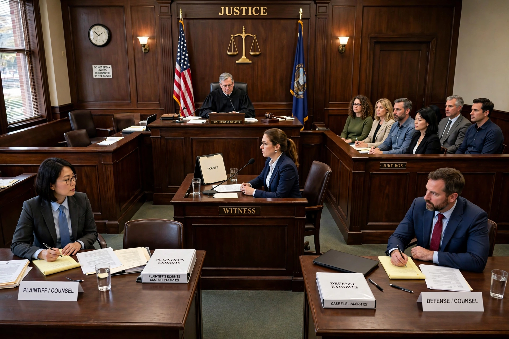

Original jurisdiction is the power of a court to hear a case in the first instance — to receive evidence, find facts and apply the law — as opposed to appellate jurisdiction, the power to review the decision of a lower court. A court exercising original jurisdiction is often called a trial court or court of first instance.
Although supreme courts function mainly as appellate courts, many constitutions assign them a narrow band of original jurisdiction over disputes thought too important or too sensitive for lower courts — classically disputes between constituent states of a federation, cases involving ambassadors and other public ministers, and certain claims against the government itself. Because supreme courts are ill-equipped for fact-finding, they often appoint a special master or referee to take evidence and report findings, which the court then reviews.
Article III of the US Constitution grants the Supreme Court original jurisdiction "in all cases affecting ambassadors, other public ministers and consuls, and those in which a state shall be party". In Marbury v. Madison (1803), the Court held that Congress cannot expand this constitutionally fixed grant. By statute (28 U.S.C. §1251), the Court's original jurisdiction is exclusive for controversies between two or more states — typically boundary and water-rights disputes, such as those over the Colorado River — and non-exclusive for cases involving ambassadors or between the United States and a state. Federal district courts are the ordinary courts of original jurisdiction for federal questions and diversity cases.
The Supreme Court of India has original jurisdiction under Article 131 of the Indian Constitution over disputes between the Union and the states or between states, and a distinctive writ jurisdiction under Article 32 to enforce fundamental rights, described by B. R. Ambedkar as the "heart and soul" of the Constitution.
Original jurisdiction may be exclusive (only that court may hear the case) or concurrent (several courts may hear it, at the claimant's election). Questions of which court has original jurisdiction are foundational to litigation strategy and may be raised at any stage, since a judgment rendered without jurisdiction is void.
See also: Appellate jurisdiction, Jurisdiction, Extraterritorial jurisdiction.